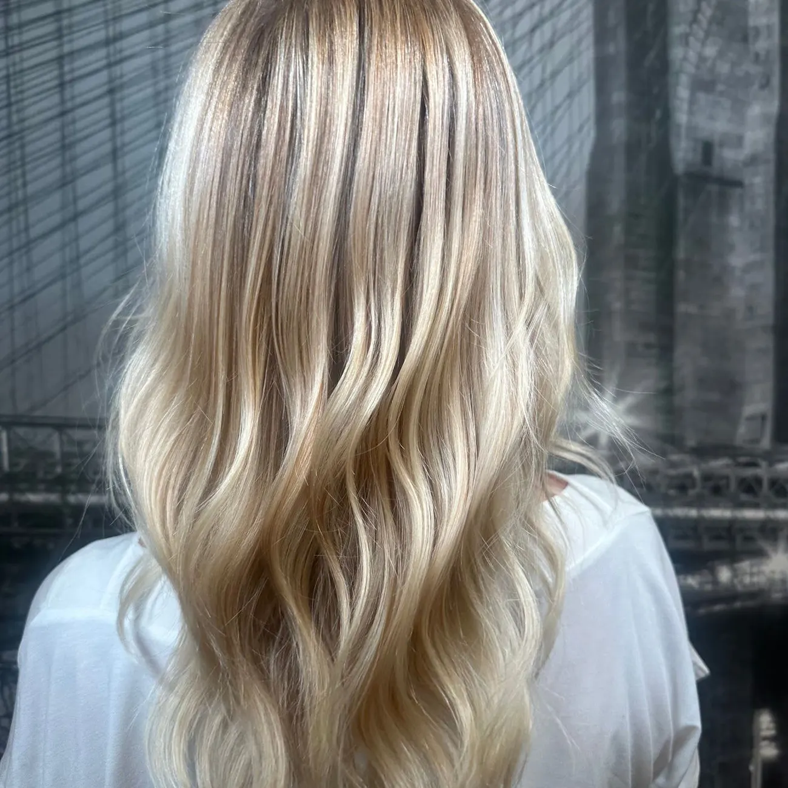
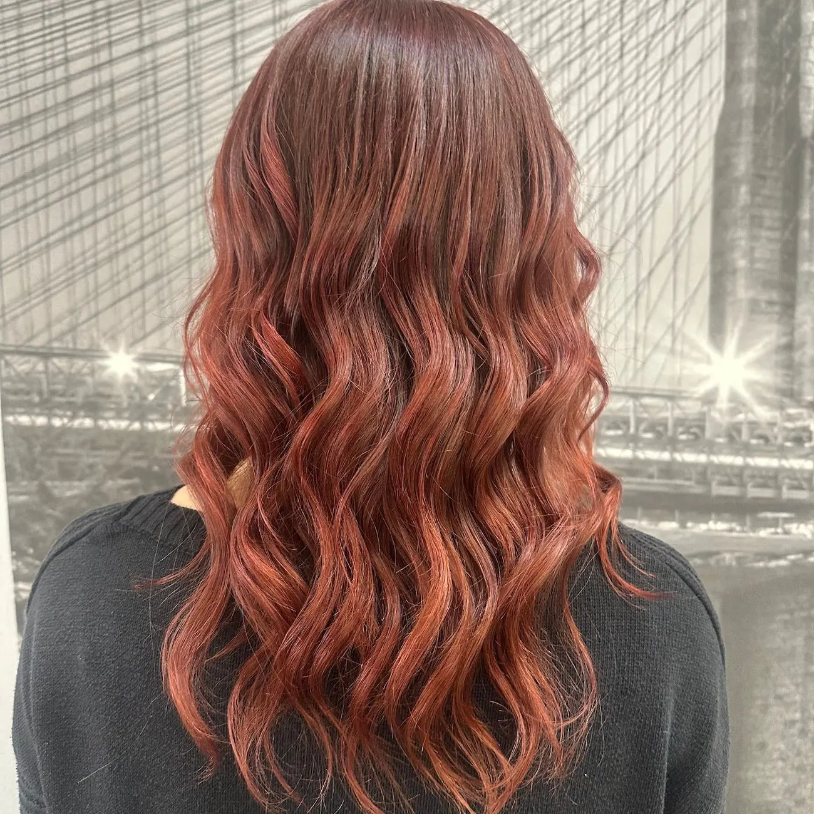
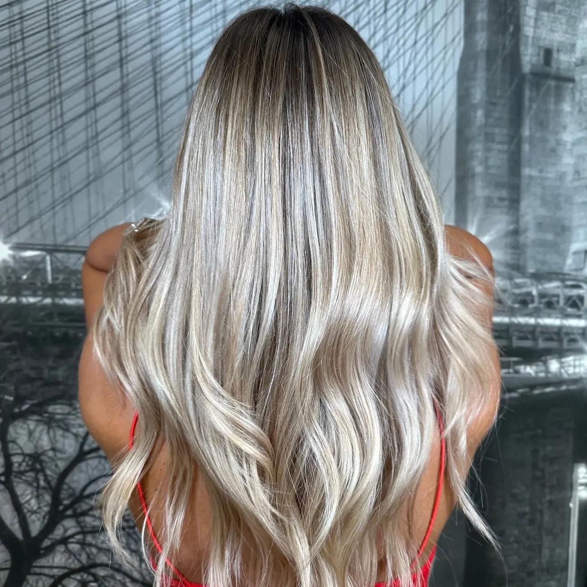
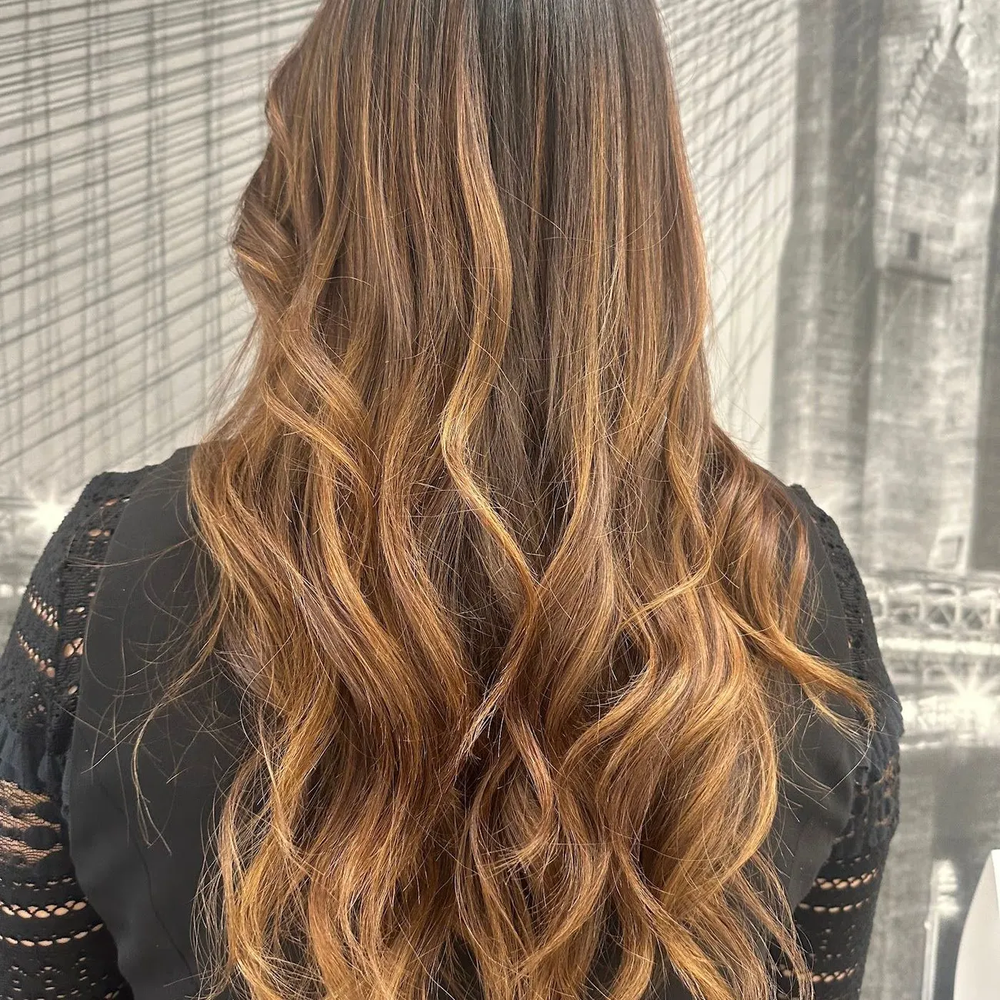
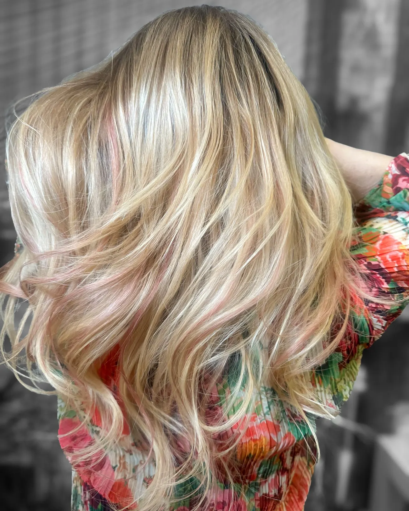

Colore e schiariture
Colorazioni, tonalizzazioni e schiariture studiate sui tuoi lineamenti.
Sito dimostrativo
Colorazioni, tonalizzazioni e schiariture studiate sui tuoi lineamenti.
La tecnica Redken che lavora su luce e profondità: in esclusiva nel nostro salone.
Dalla consulenza alla piega.
Con micro capsule invisibili.
Per trovare i colori che ti valorizzano.
Microcamera per guardare la cute da vicino, ozono terapia, ricostruzione.





Prodotti: Redken per colore e trattamenti, My Organics per la cute.
È una tecnica di schiaritura Redken che lavora su luce e profondità per illuminare il viso nei punti giusti, senza stravolgere il colore di base.
Redken per colore e trattamenti, e My Organics per la cura della cute.